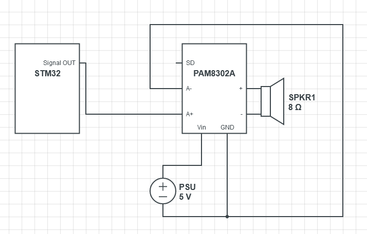
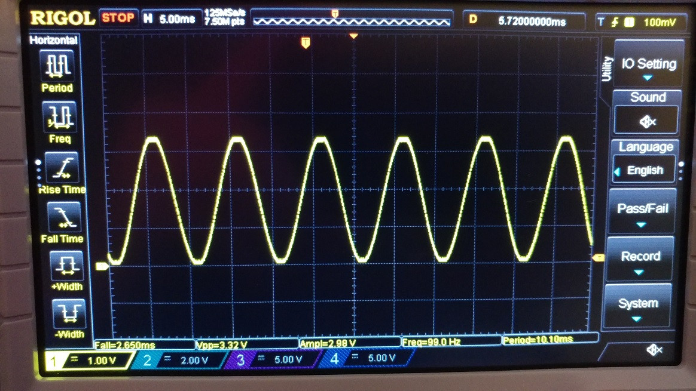

TF2 Sentry - Page Work in Progress
Audio System
The audio system will play the audio of the sentry everytime it completes a 90 degree movement, the sound of it spotting a target, and the sound of the sentry firing. I did NOT include a motor sound for two reasons. One, the real motor has it's own sound, and two, the motor's own sound will drown out the sound effect.
Design of the System
 I will use the HAL libraries along with DMA. Following the AN3126 guide from STM, I designed a system to play audio. First to test, I generated a sine wave with the following code I made
uint8_t samples = 100;
void getSineVal(){
for(int i = 0; i < samples; i++){
sineVal[i] = (sin(2*i*PI/samples)+1)*((0xFFF+1)/2);
}
}
getSineVal();
HAL_TIM_Base_Start(&htim6);
HAL_DAC_Start(&hdac, DAC_CHANNEL_1);
HAL_DAC_Start_DMA(&hdac, DAC_CHANNEL_1, sineVal, 100, DAC_ALIGN_12B_R);
// sineVal being the data, 100 being the # of data points
I am using TIM6 since it is specifically used to drive the DAC. The clock for TIM6 is at 80Mhz. The prescalar is 80-1, the period is 100-1, and the #samples is 100. So 80Mhz/(80 * 100 * 100) = 100Hz. Below is an image of the generated sine wave on my oscilloscope.

Sending the Audio Data
Now I have separate files for each separate sound. I create a pointer to the start of the audio data. I don't need the first 44 bytes that describe the file as I already set everything else myself.
Processing the Data
Storing the Data
Results
-

DAC Signal
The DAC signal at different horizontal levels.
-

-

-

-

-

Amplified Signal
This is the signal after it goes through the amplifier.
-

-

-

-